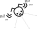
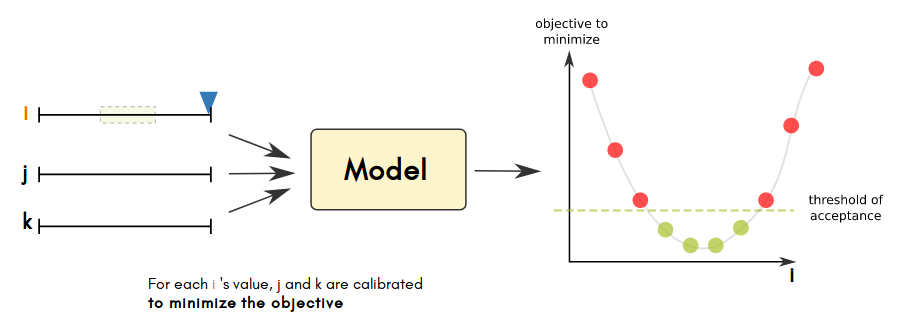
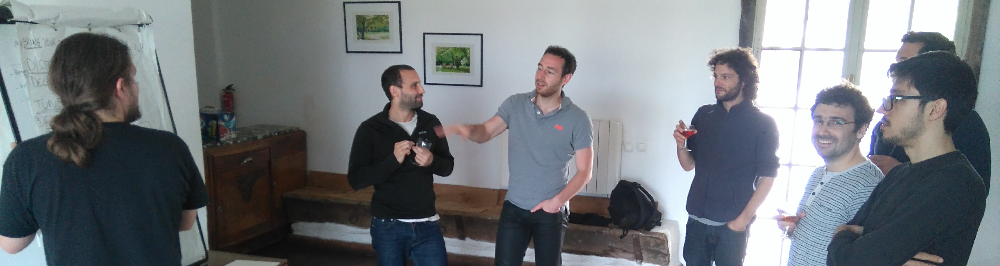

De L'analise de sensibilité des systèmes multi-agents à l'utilisation de OpenMole
Par Etienne Delay 13 décembre 2017, Dakar L'équipe Openmole : Romain REUILLON, Mathieu LECLAIRE, Jonathan PASSERAT-PALMBACH, Paul CHAPRON, Guillaume CHEREL, Etienne DELAY, Julien PERRET, Sebastien REY-COYREHOURCQ
Exploration de modèles multi-agents

Explorer pour discuter
Des conceptions complémentaires de la réalité


Explorer pour faire des choix
connaitre et agir sur la dépendance au chemin
Les choix génrère des chemins conduisant au même pattern

Explorer pour comprendre
le "laboratoire virtuel", un agitateur d'idées mais pas que ...

comportements attendus / simulés ? défaillances ? robustesse(s) ?
Les bénéfices de l'exploration
L'exploration des modèles revient donc à organiser :
- la saine confrontation des points de vue
- la mesure des écarts entre comportements internes attendus et simulés
- la chasse aux bugs et cas limites

Autrement dit, un processus systématique qui stimule l'effet de surprise.
Analyse de sensibilité ?
aproches et problèmes
De quoi on parle ?
“Sensitivity analysis (SA) is used to explore the influence of varying inputs on the outputs of a simulation model” (Ginot et al. 2006).
“By exploring the sensitivity of model output to changes in parameters, we learn about the relative importance of the various mechanisms represented in the model and how robust the model output is to parameter uncertainty.” (Thiele et al. 2014).
- sensibilité locale
- sensibilité globale
sensibilité locale : Comment ?

- +
- ludique
- interactif
- exploratoire
- incrémental
- essai erreur
- -
- peu fiable
- couteux en temps
- limité
- difficilement reproductible

Une première étape pour systématiser OAT
 |
| un modèle simple, un plan d'expérience complet : P1 x P2 x P3 |
Problème n°1 : Explosion combinatoire
Durée & Volumétrie impossible à gérer
Problème n°2 : "Curse Dimensionality"

de dimentions = couverture à nb points égal
Un exemple avec Netlogo
le modèle Ants
Des règles simples
Utilisation de traces ou "phéromones"
 Alignement avec les traces les plus fortes
Comportement

Exemple de dynamique

Le BehaviorSpace de Netlogo

cette config produit 4810 simulations
Mesurer la stockasticité

Observer l'effet du nombre de réplications
Chercher dans la donnée
Observer les effets combiner de dépot ET diffusion de phéromones
Analyse de sensibilité ?
Quelques solutions
des méthodes plus sioux ...


ou changer d'approche !
Organiser une mise en tension entre les choix Input - Output
Quelle mise en tension ?
Des critères quantifiés pour "guider" une exploration automatisé

Formaliser les attentes
Quelle valeurs de (diffusion, evaporation) minimise le temps de consommation des trois tas de nourriture ?
- Objectif, minimiser le temps pour épuiser la ressource
Utiliser un algo. génétique comme algo de calibration

Revenons à nos fourmis
Le Behavior Search est intégré à Netlogo depuis la version 6
Une petite conclusion à mis parcourt
- Les algo. génétique rationalise un peut le calcul
- Mais :
- On a besoin de paraléliser à plus grande échelle
- Utiliser des algo penser pour l'exploration ABM
High Performance Computing : OpenMole !
L'architecture
Le modèle Ants dans OpenMole
val ants =
NetLogo5Task(workDirectory / "ants.nlogo", cmds) set (
// Map the OpenMOLE variables to NetLogo variables
netLogoInputs += (gPopulation, "gpopulation"),
netLogoInputs += (gDiffusionRate, "gdiffusion-rate"),
netLogoInputs += (gEvaporationRate, "gevaporation-rate"),
netLogoOutputs += ("final-ticks-food1", food1),
netLogoOutputs += ("final-ticks-food2", food2),
netLogoOutputs += ("final-ticks-food3", food3),
// The seed is used to control the initialisation of the random number generator of NetLogo
inputs += seed,
outputs += seed
)
Méthodes
- Data reconstruction
- Parameter estimation
- Sensitivity analysis
- Robustness assessment
- Optimisation
- Diversity research
- Hybrid, ex: optimisation + diversity
Exemple sur ants
//genetic algorithm
val nsga2 =
NSGA2(
mu = 200,
genome = Seq(gPopulation in (25.0, 250.0), gDiffusionRate in (0.0, 99.0), gEvaporationRate in (0.0, 99.0)),
objectives = Seq(food1, food2, food3),
replication = Replication(seed = seed, aggregation = Seq(median, median, median), max = 100)
)
//Workflow
val evolution =
SteadyStateEvolution(
algorithm = nsga2,
evaluation = ants,
parallelism = 500,
termination = 2000
)
Les environnements
Les environnements pris en comptes
- Multi-thread
- Delegation through SSH
- PBS (on ssh)
- SLURM (on ssh)
- Condor (on ssh)
- SGE (on ssh)
- OAR (on ssh)
- EGI Grid (trough DIRAC)
- Adhoc Desktop Grid
Quelques exemples
//grille
val env = EGIEnvironment("vo.complex-systems.eu")
//local
val env = LocalEnvironment(10)

“ça marche à l'électricité, mais il faut une réaction nucléaire pour produire les 2,21 gigowatts d'électricité nécessaires.” (Emmett Brown 1985).
Plug !
// Plug everything together to create the workflow
(evolution on env by 20 hook savePopulationHook)
L'optimisation en marche
L'interface dans un browser

Les méthodes disponibles
Calibration
- Sur un seul critère
- Multi-critères
Dans OpenMole → NSGA2 algorithm et SteadyStateEvolution schema
Profiles
Dans OpenMole → GenomeProfile algorithm et SteadyStateEvolution schema
PSE (Pattern Space Exploration)
Dans OpenMole → PSE algorithm et SteadyStateEvolution schema
Autres "Design of Experiments"
- Grid Sampling, Uniform Distribution
- Sampling depuis un CSV
- Latin Hypercube
- Sobol Sequence
- ...
Pomic avec R et OpenMole
Pomic (Pattern Oriented Modelling Information Criterion) est un package R pour évaluer l'impacte des choix danss du pattern oriented modeling
Liens Utiles
| Documentation | www.openmole.org |
| User list | https://discourse.iscpif.fr/c/openmole |
| Development version | next.openmole.org |
| Source code | github.com/openmole |
| Market place | github.com/openmole-market |
| Demo instance | demo.openmole.org |
Merci de votre attention
L'équipe OpenMole c'est aussi une aventure humaine qui se constuit sur du papier !